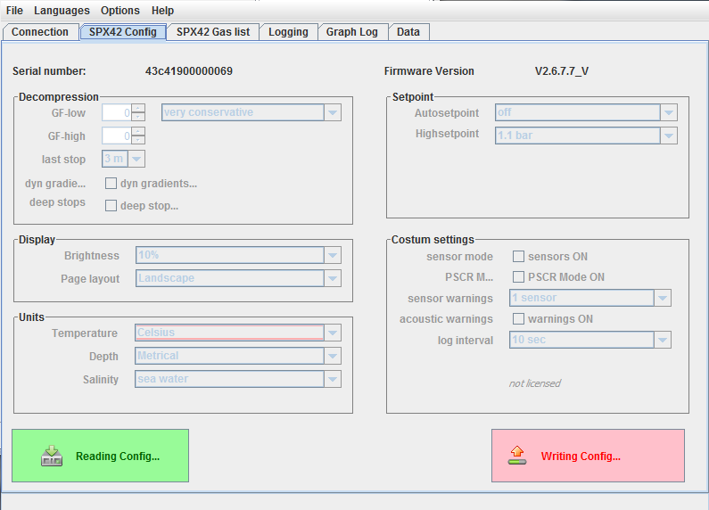
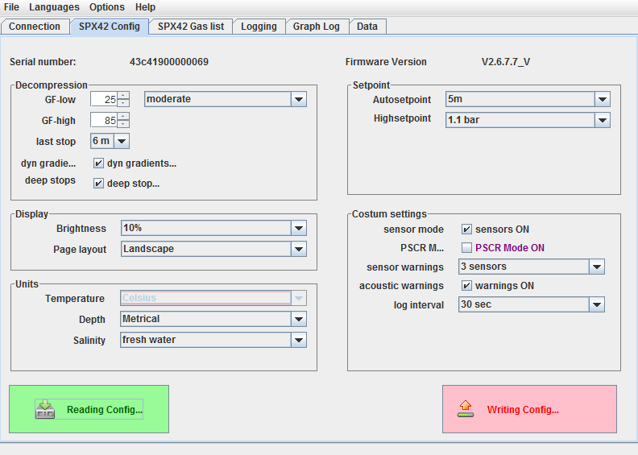

SPX42 Configuration
If the SPX42 is connected to the program, this tab will be enabled. At first
only serial number and firmware version are of importance here. All elements
except the button 'Read config' are disabled.

Initial state of the configuration tab
Pressing the 'Read config' button will cause the current configuration to be
read from the SPX42 and displayed accordingly. All other elements of the tab
will be enabled.

Configuration read
After about one minute the window's title will be changed to the current
voltage across the SPX42's battery. The display will be refreshed about
every minute.
After editing all desired options pressing the button 'Write config' will
save the edited configuration back onto the SPX42.
Contents
Depending on the SPX42's available licenses the Costum settings
may not be available.
I's not possible to make changes in this area.
Contents